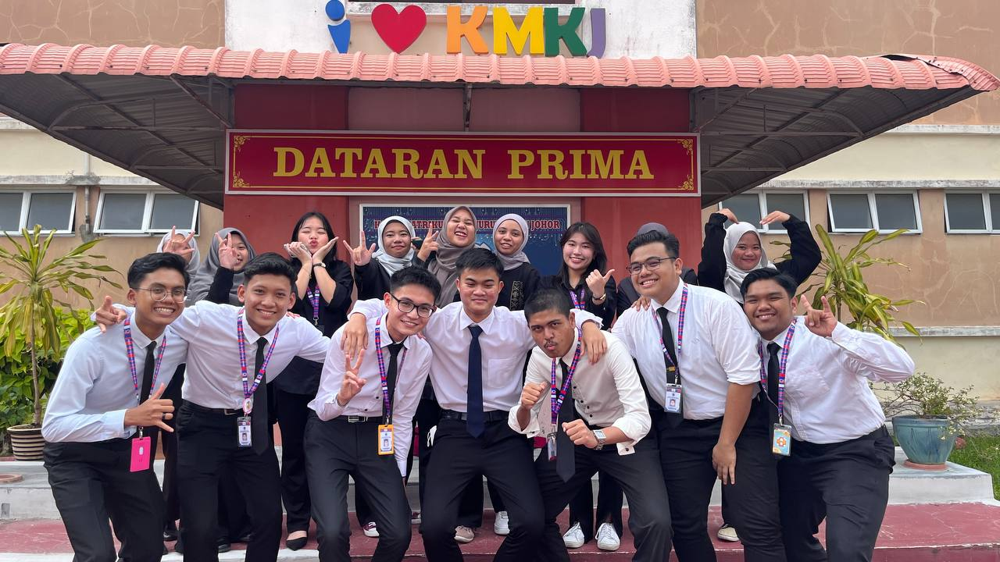

LAU YAN KAI
I'm currently pursuing my degree in Computer Science with a focus on Data Engineering at Universiti Teknologi Malaysia (UTM). 🎓
💻 Passionate about leveraging technology to solve real-world challenges, I constantly seek opportunities for innovation and growth. When I'm not immersed in coding or data analysis, you can find me exploring the latest advancements in the tech world.
Let's connect and embark on a journey of collaboration and knowledge exchange! 🚀🤖